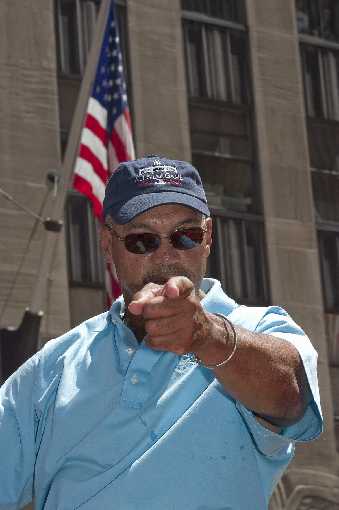

Reggie Jackson
Before New York ever heard of Mr. October, he was the swaggering slugger at the heart of three straight Oakland championships.
The Reggie Jackson Story
Reginald Martinez Jackson was born May 18, 1946, in Wyncote, Pennsylvania, outside Philadelphia. His father Martinez ran a tailoring and dry cleaning shop and flew a P51 Mustang in World War II, and he raised Reggie after his mother left when Reggie was six. Reggie starred in football, basketball, baseball and track, and he went to Arizona State on a football scholarship to play for Frank Kush.
Baseball almost happened by accident. He talked his way into a tryout as a freshman, showed tape measure power right away, and by his sophomore year he'd taken over center field from Rick Monday. The Kansas City A's took him with the second pick of the June 1966 draft, right after the Mets took a high school catcher named Steve Chilcott, and Charlie Finley signed him for an $85,000 bonus.
At Modesto he played alongside Rollie Fingers, Joe Rudi and Dave Duncan, the core of what was coming. He hit .178 in a brief look in Kansas City in 1967. Then Finley moved the franchise to Oakland, and in 1968 Reggie hit 29 home runs and settled into a lineup with Sal Bando, Rudi and Bert Campaneris.
1969 made him famous. He had 34 home runs by July 5, people were comparing him to Roger Maris and Babe Ruth, and the cameras came running. He wore down and finished with 47, his career high, along with 123 runs, 114 walks and a league leading .608 slugging percentage. He was 23.
1970 was rough. He hit .237, his marriage ended, and he went to Puerto Rico that winter to play for Frank Robinson at Santurce, who helped put him back together. In 1971 the A's won 101 games and the West, and at the All Star Game in Detroit he hit a Dock Ellis pitch off the transformer on the light tower on the right field roof at Tiger Stadium.
In Game 5 of the 1972 ALCS at Detroit, Reggie stole second, then broke for home on the front end of a double steal in the second inning and slid in to tie the game 1 to 1. He tore his hamstring doing it and had to be carried off. Oakland won 2 to 1 for its first pennant, and Reggie watched the World Series win over Cincinnati on crutches.
1973 was all his. He led the league with 32 home runs and 117 RBIs, hit .293, and won the MVP unanimously. In Game 7 of the World Series against the Mets at the Coliseum he hit a two run homer off Jon Matlack in the third inning, and he was the Series MVP after hitting .310 with six RBIs. Two titles in a row.
In 1974 he described the A's as a team that could win at will, and they did, even with the fights in the clubhouse. He homered off Andy Messersmith in Game 1 of the World Series against the Dodgers, and in the eighth inning of the Game 5 clincher he backed up Bill North, fielded Bill Buckner's hit and started the relay that cut Buckner down at third. Three straight.
He hit 36 home runs in 1975 for another home run title and another division crown, but a week before Opening Day 1976, Finley traded him and Ken Holtzman to Baltimore. Reggie was crushed. He'd made his life in Oakland. "The eight years I spent in Oakland were the best baseball years of my life," he said later.
From Baltimore he went to New York, where three home runs in Game 6 of the 1977 World Series made him Mr. October, and then to the Angels for five seasons. In 1987, at 41, he came back to Oakland to finish it. In his last game, October 4 at Comiskey Park, he doubled in a run in the first inning and singled up the middle in his final at bat.
He retired with 563 home runs, sixth on the career list at the time, 14 All Star selections and five championship rings. He was elected to the Hall of Fame on the first ballot in 1993. The A's retired his number 9 on May 22, 2004, and he went into the A's Hall of Fame with its first class in 2018.
What He Meant to Us
The rest of the country thinks of Reggie in pinstripes, and fine, let them have the candy bar. The guy who learned how to be a superstar did it here. Eight seasons, 268 home runs, three straight rings, an MVP. The swagger was born on the Coliseum grass with the mustaches, not in the Bronx.
That 1969 summer, when a 23 year old in Oakland was getting compared to Ruth and Maris in July, must've been something. And the 1972 ALCS might be my favorite Reggie moment of all of them, because it's the least Reggie thing he ever did. No home run. He stole home on a torn hamstring to tie a pennant game and got carried off the field. Then sat out the World Series and watched his team win it.
He was loud, he fought with teammates, he fought with Finley, and the A's kept winning anyway, maybe because of it. When he said the eight years in Oakland were the best baseball years of his life, I believed him. You could see it when he came back in 1987 at 41 just to end it where it started.
Number 9 is retired in Oakland for a reason. Before he was Mr. October, he was ours.
In Pictures

Why He Was Clutch
Reggie lived for the moment everybody was watching. He hit 18 home runs in 77 postseason games and slugged .527 in October for his career. With Oakland, he hit the big homer in Game 7 of the 1973 World Series and was the Series MVP, and he homered to open the scoring in Game 1 of the 1974 Series.
The 1971 All Star Game is the best example. National stage, Tiger Stadium, Dock Ellis on the mound, and Reggie hit one off the transformer on the light tower above the right field roof. I'd love to know how far it would've gone.
And clutch isn't only the long ball. With the 1972 pennant on the line in Detroit, he stole home on the front end of a double steal to tie Game 5, tearing his hamstring in the process. Oakland won 2 to 1. That's the kind of play that wins a series and doesn't show up on a highlight reel of home runs.
Clutch Moments
- July 13, 1971
Off the light tower at Tiger Stadium
In the third inning of the All Star Game in Detroit, with Luis Aparicio on base, Reggie hit a Dock Ellis pitch that soared above the right field stands and struck the transformer on a light standard on the right field roof. Two run homer, and the American League won 6 to 4.
- October 12, 1972
Stealing home on a torn hamstring
Down 1 to 0 in the second inning of the deciding Game 5 of the ALCS in Detroit, Reggie walked, stole second, moved to third, and then broke for the plate on a double steal with Mike Epstein. He beat it home to tie the game but tore his hamstring on the play and had to be carried off. Oakland won 2 to 1 for the pennant.
- October 21, 1973
Game 7, two run homer, Series MVP
With the Mets in town for Game 7 at the Coliseum, Reggie hit a two run home run off Jon Matlack in the third inning, scoring Joe Rudi. The A's won 5 to 2 for their second straight championship, and Reggie was named World Series MVP.
- October 12, 1974
Opening the scoring in L.A.
In Game 1 of the World Series at Dodger Stadium, Reggie took Andy Messersmith deep in the second inning for the first run of the Series. Oakland won 3 to 2 and went on to beat the Dodgers in five.
- October 17, 1974
The relay that saved the third title
Oakland led 3 to 2 in the eighth inning of Game 5 when Bill Buckner singled and Bill North misplayed it in center. Reggie was backing up the play, grabbed the ball and fired to Dick Green, whose relay to Sal Bando cut Buckner down at third. The Dodgers never threatened again and the A's had three straight.
- October 4, 1987
One last swing in green and gold
In the final game of his career, at Comiskey Park, the 41 year old Reggie doubled home Jose Canseco in the first inning off Floyd Bannister, walked, and singled to center off Bobby Thigpen in his last big league at bat.
The Highlights
What They Said About Jackson
“When Sal talked, people listened.”
“Just as nature fills a vacuum, Reggie fills a spotlight.”
“I must admit, when Reggie hit his third home run and I was sure nobody was looking, I applauded in my glove.”
“would give Cat the Cy Young Award, the Most Valuable Player Award, the Academy Award, and the kitchen sink.”
Career Stats
| Year | Team | G | AB | R | H | 2B | 3B | HR | RBI | SB | BB | AVG | OBP | SLG | OPS |
|---|---|---|---|---|---|---|---|---|---|---|---|---|---|---|---|
| 1967 | KCA | 35 | 118 | 13 | 21 | 4 | 4 | 1 | 6 | 1 | 10 | .178 | .269 | .305 | .574 |
| 1968 | OAK | 154 | 553 | 82 | 138 | 13 | 6 | 29 | 74 | 14 | 50 | .250 | .316 | .452 | .768 |
| 1969 | OAK | 152 | 549 | 123 | 151 | 36 | 3 | 47 | 118 | 13 | 114 | .275 | .410 | .608 | 1.018 |
| 1970 | OAK | 149 | 426 | 57 | 101 | 21 | 2 | 23 | 66 | 26 | 75 | .237 | .359 | .458 | .817 |
| 1971 | OAK | 150 | 567 | 87 | 157 | 29 | 3 | 32 | 80 | 16 | 63 | .277 | .352 | .508 | .860 |
| 1972 | OAK | 135 | 499 | 72 | 132 | 25 | 2 | 25 | 75 | 9 | 59 | .265 | .350 | .473 | .823 |
| 1973 | OAK | 151 | 539 | 99 | 158 | 28 | 2 | 32 | 117 | 22 | 76 | .293 | .383 | .531 | .914 |
| 1974 | OAK | 148 | 506 | 90 | 146 | 25 | 1 | 29 | 93 | 25 | 86 | .289 | .391 | .514 | .905 |
| 1975 | OAK | 157 | 593 | 91 | 150 | 39 | 3 | 36 | 104 | 17 | 67 | .253 | .329 | .511 | .840 |
| 1976 | BAL | 134 | 498 | 84 | 138 | 27 | 2 | 27 | 91 | 28 | 54 | .277 | .351 | .502 | .853 |
| 1977 | NYY | 146 | 525 | 93 | 150 | 39 | 2 | 32 | 110 | 17 | 74 | .286 | .375 | .550 | .925 |
| 1978 | NYY | 139 | 511 | 82 | 140 | 13 | 5 | 27 | 97 | 14 | 58 | .274 | .356 | .477 | .833 |
| 1979 | NYY | 131 | 465 | 78 | 138 | 24 | 2 | 29 | 89 | 9 | 65 | .297 | .382 | .544 | .926 |
| 1980 | NYY | 143 | 514 | 94 | 154 | 22 | 4 | 41 | 111 | 1 | 83 | .300 | .398 | .597 | .995 |
| 1981 | NYY | 94 | 334 | 33 | 79 | 17 | 1 | 15 | 54 | 0 | 46 | .237 | .330 | .428 | .758 |
| 1982 | CAL | 153 | 530 | 92 | 146 | 17 | 1 | 39 | 101 | 4 | 85 | .275 | .375 | .532 | .907 |
| 1983 | CAL | 116 | 397 | 43 | 77 | 14 | 1 | 14 | 49 | 0 | 52 | .194 | .290 | .340 | .630 |
| 1984 | CAL | 143 | 525 | 67 | 117 | 17 | 2 | 25 | 81 | 8 | 55 | .223 | .300 | .406 | .706 |
| 1985 | CAL | 143 | 460 | 64 | 116 | 27 | 0 | 27 | 85 | 1 | 78 | .252 | .360 | .487 | .847 |
| 1986 | CAL | 132 | 419 | 65 | 101 | 12 | 2 | 18 | 58 | 1 | 92 | .241 | .379 | .408 | .787 |
| 1987 | OAK | 115 | 336 | 42 | 74 | 14 | 1 | 15 | 43 | 2 | 33 | .220 | .297 | .402 | .699 |
| Career | 2820 | 9864 | 1551 | 2584 | 463 | 49 | 563 | 1702 | 228 | 1375 | .262 | .356 | .490 | .846 |
Regular season stats from the MLB Stats API. KCA is the Kansas City Athletics, the same franchise before its 1968 move to Oakland; TOT rows combine a season split between teams. Scroll the table sideways on a phone.
Postseason
| Year | Team | G | AB | R | H | 2B | 3B | HR | RBI | SB | BB | AVG | OBP | SLG | OPS |
|---|---|---|---|---|---|---|---|---|---|---|---|---|---|---|---|
| 1971 | OAK | 3 | 12 | 2 | 4 | 1 | 0 | 2 | 2 | 0 | 0 | .333 | .917 | ||
| 1972 | OAK | 5 | 18 | 1 | 5 | 1 | 0 | 0 | 2 | 2 | 1 | .278 | .333 | ||
| 1973 | OAK | 12 | 50 | 3 | 12 | 3 | 1 | 1 | 6 | 0 | 2 | .240 | .400 | ||
| 1974 | OAK | 9 | 26 | 3 | 6 | 2 | 0 | 1 | 2 | 1 | 10 | .231 | .444 | .423 | .867 |
| 1975 | OAK | 3 | 12 | 1 | 5 | 0 | 0 | 1 | 3 | 0 | 0 | .417 | .417 | .667 | 1.084 |
| 1977 | NYY | 11 | 36 | 11 | 11 | 1 | 0 | 5 | 9 | 1 | 5 | .306 | .405 | .750 | 1.155 |
| 1978 | NYY | 10 | 36 | 7 | 15 | 2 | 0 | 4 | 14 | 0 | 6 | .417 | .511 | .806 | 1.317 |
| 1980 | NYY | 3 | 11 | 1 | 3 | 1 | 0 | 0 | 0 | 0 | 1 | .273 | .333 | .364 | .697 |
| 1981 | NYY | 10 | 36 | 8 | 10 | 1 | 0 | 3 | 6 | 1 | 4 | .278 | .350 | .556 | .906 |
| 1982 | CAL | 5 | 18 | 2 | 2 | 0 | 0 | 1 | 2 | 0 | 2 | .111 | .200 | .278 | .478 |
| 1986 | CAL | 6 | 26 | 2 | 5 | 2 | 0 | 0 | 2 | 0 | 2 | .192 | .250 | .269 | .519 |
| Career | 77 | 281 | 41 | 78 | 14 | 1 | 18 | 48 | 5 | 33 | .278 | .358 | .527 | .885 |
Reggie Jackson: Fast Facts
What years was Reggie Jackson with the Oakland Athletics?
Reggie Jackson was with the Oakland Athletics over 2 stints (1968 to 1975 and 1987) as a right fielder.
What number did Reggie Jackson wear?
Reggie Jackson wore numbers 9, 44.
What are Reggie Jackson's signature numbers?
563 career home runs; 268 home runs for Oakland; 47 home runs in 1969, his career high; 3 straight World Series titles in Oakland.
What were Reggie Jackson's biggest honors?
1973 AL MVP (unanimous); 2x World Series MVP (1973, 1977); 5x World Series champion (1972, 1973, 1974 Athletics; 1977, 1978 Yankees); 14x AL All Star (1969, 1971 to 1975, 1977 to 1984); AL home run leader with Oakland in 1973 (32) and 1975 (36).
What are some of Jackson's biggest moments?
Off the light tower at Tiger Stadium (July 13, 1971); Stealing home on a torn hamstring (October 12, 1972); Game 7, two run homer, Series MVP (October 21, 1973). Every one is in the Clutch Moments section above.